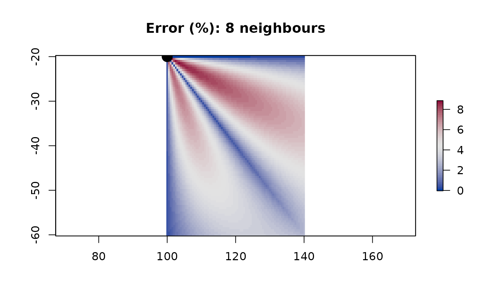

connectivity_effect.RmdThe travelcost package uses graph-based algorithm to estimate travel costs and shortest paths. The region of interest is first divided in a grid of cells. Each cell is connected to its adjoining neighbours, with this connectivity represented in a graph structure. The cost of travel from every cell to each of its neighbours is calculated, and these costs are stored as the weights of the edges in the graph. Standard shortest-path algorithms can then be used to calculate the cost of travel from any cell to any other cell, with the total cost being the sum of the edge weights along the shortest path between those two cells.
The number of neighbours that each cell is connected to will affect the accuracy of the results. Consider a cell that is connected only to its four cardinal neighbours (i.e. the cells to its north, south, east, and west). I can only move along these connected edges. So in order to travel to the north-west, I must first move to the northern neighbour and then to its western neighbour (or west then north). Simple geometry tells us that this distance is longer than moving directly north-west. We can see this effect:
my_raster <- raster::raster(ext = raster::extent(c(99.75, 140.25, -60.25, -19.75)),
res = c(0.5, 0.5), crs = "+proj=longlat")
from <- c(100, -20)
## distances from this point to all cells in the raster, calculated as great-circle distances
cost0 <- raster::distanceFromPoints(my_raster, from)
## construct a graph with only 4-neighbour connectivity
g4 <- tc_build_graph(my_raster, neighbours = 4)
## set edge weights by great-circle distance
g4 <- tc_set_edge_weights(g4, fun = geosphere::distHaversine)
## estimated distances from one cell to all others
cost4 <- tc_cost(g4, from)
plot((cost4 - cost0) / cost0 * 100, col = hcl.colors(51, palette = "BlueRed"),
main = "Error (%): 4 neighbours")
points(from[1], from[2], col = 1, bg = 1, pch = 21, cex = 2)Starting at the top-left cell, if we move directly south or east, then our estimated distance is exactly correct. However, if we move in a directly-diagonal line, our estimated distance is an overestimate by about 40%.
We can mitigate this effect by connecting each cell to all eight of its immediate neighbours, rather than just four:
g8 <- tc_build_graph(my_raster, neighbours = 8)
## set edge weights by great-circle distance
g8 <- tc_set_edge_weights(g8, fun = geosphere::distHaversine)
## estimated distances from one cell to all others
cost8 <- tc_cost(g8, from)
plot((cost8 - cost0) / cost0 * 100, col = hcl.colors(51, palette = "BlueRed"),
main = "Error (%): 8 neighbours")
points(from[1], from[2], col = 1, bg = 1, pch = 21, cex = 2)
Now, our estimate when moving east, south, or south-east is exact. Moving at intermediate angles still introduces some error (up to a maximum of just over 8%). We can further reduce the error by introducing more neighbours - e.g. connecting each cell to its neighbours located to the south-south-east (i.e. two cells south and one cell east), south-south-west, east-east-south, and west-west-south:
g16 <- tc_build_graph(my_raster, neighbours = 16)
## set edge weights by great-circle distance
g16 <- tc_set_edge_weights(g16, fun = geosphere::distHaversine)
## estimated distances from one cell to all others
cost16 <- tc_cost(g16, from)
plot((cost16 - cost0) / cost0 * 100, col = hcl.colors(51, palette = "BlueRed"),
main = "Error (%): 16 neighbours")
points(from[1], from[2], col = 1, bg = 1, pch = 21, cex = 2)In principle we could continue adding more neighbours, but there is a point of diminishing returns. Typically when calculating travel cost we need to account for barriers (e.g. islands or other land features that prevent an animal from swimming in a direct path across those features) or varying cost of travel due to currents, wind, or topography. As we add more neighbours to each cell’s connectivity, the step distance associated with those edges becomes longer, and we are more likely to be stepping over barrier features or missing fine-scale structure in cost fields such as topography. The appropriate choice of connectivity therefore depends on the spatial scales of the grid and any cost fields or barrier features, and computational demands (more neighbours and/or a finer grid means a larger graph, and higher computational demands).